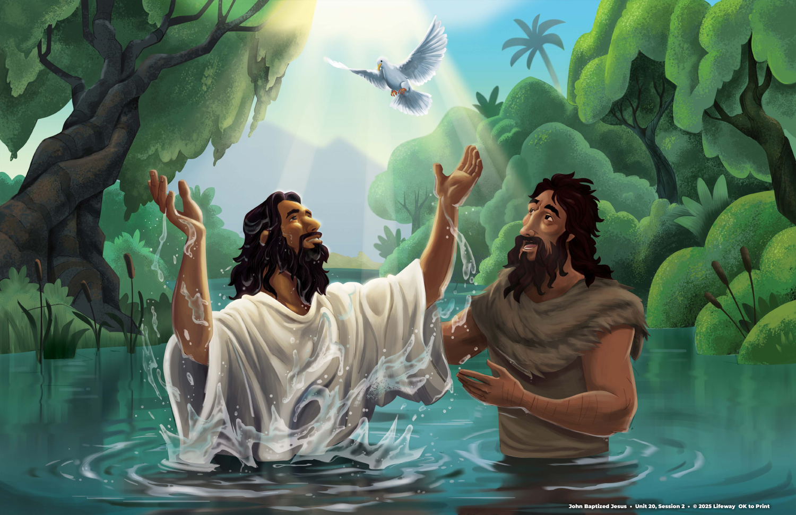

The Gospel Project for Kids · Unit 20, Session 2
John Baptized Jesus
Jesus obeyed God by being baptized.
Matthew 3 · Mark 1 · Luke 3 · John 1

Jesus obeyed His Father's plan. He did not need forgiveness.
The Gospel Project: Kids · Older Kids and Younger Kids guides share this story point
The setting
At the Jordan River
John was baptizing people and preparing the way for Jesus. Jesus came to be baptized by John.
RIVER
John prepared the way.Now Jesus had come to begin His ministry.
John knew Jesus was greater, yet Jesus asked him to baptize Him.
The Jordan River
Matthew 3:13 · Mark 1:9 · Luke 3:21
John points to Jesus
A special name
John pointed people to Jesus.
John called Jesus the Lamb of God and said that Jesus was greater than he was.
John's name for Jesus
The Lamb of God
John recognized Jesus as the One who came to take away sin.
Jesus came to save people from sin.
John 1:29–34 · The leader guide connects the Lamb of God to Jesus' saving work
The surprising choice
Jesus chose to obey.
John tried to stop Jesus, but Jesus was baptized as part of God's plan.
Remember
Jesus had never sinned.
He was not being baptized because He needed forgiveness.
He obeyed His Father and followed God's plan.
Jesus obeyed God
Matthew 3:13–15 · Jesus' baptism was obedience, not a request for forgiveness
The Spirit came like a dove
A heavenly announcement
The Father spoke about Jesus.
As Jesus came up from the water, the Spirit came down like a dove. The Father called Jesus His beloved Son.
God the FatherGod the SonGod the Spirit
The Father, the Son, and the Holy Spirit: one God in three persons.
Matthew 3:16–17 · Mark 1:10–11 · Luke 3:21–22 · John 1:32–34
Remember the big truth
Who is Jesus?
Is Jesus God or a human?
Jesus is fully God and fully human.
Jesus obeyed God by being baptized.
The story point
Big Picture Question and Story Point · The Gospel Project: Kids, Unit 20, Session 2
Jesus obeyed His Father
The good news
Jesus obeyed all the way to the cross.
Later, Jesus died for our sins and rose again. Everyone who trusts in Him receives eternal life.
We can trust Jesus to save us. Baptism is a sign of faith, not what saves us.
Christ Connection: Jesus obeyed His Father, died on a cross, and rose again · Romans 6:4
Key passage · CSB
God came to live among us.
“The Word became flesh and dwelt among us.”
John 1:14 · CSB excerpt
Jesus, God's Son, came to live among people. Read the full verse together from your Bible.
Jesus is God the Son, and He came to live among us.
God with us
John 1:14 · Key Passage Poster provides CSB, ESV, KJV, and NIV versions
Five-minute question time
Let's talk about it.
Tap a question to reveal a short answer cue.
1
Why was Jesus baptized if He had no sin?
Jesus obeyed His Father. He did not need forgiveness.
2
What special name did John use for Jesus?
John called Jesus the Lamb of God.
3
Who was present at the river?
The Father, the Son, and the Holy Spirit.
4
Does baptism save us? What does it show?
Jesus saves us. Baptism shows others that we trust and follow Him.
Questions adapted from the Older Kids and Younger Kids Leader Guides
← → navigate · Space next · Home / End
Slide 1 of 9: John Baptized Jesus